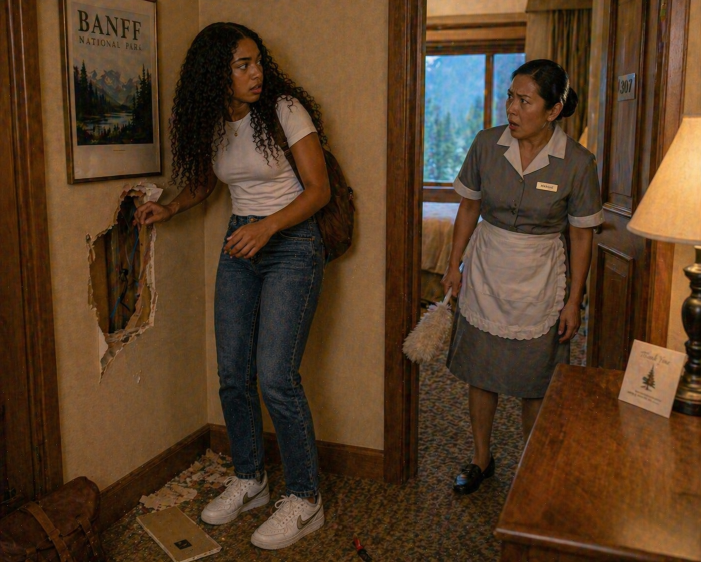

| Patricia clenched her fist, frustration finally getting the better of her. With no obvious way to open the hidden panel, she stepped back and drove her fist into it. The wall cracked with a sharp sound, splintering the surface and leaving a jagged hole where the panel had been. Breathing heavily, she reached inside, but the damage was done—the noise had echoed through the quiet hotel corridor. Before she could react, there was a knock at the door, followed by it opening slightly as a hotel maid peered in, her expression shifting quickly from concern to alarm as she saw the broken wall. |
 |
| Within minutes, the situation escalated. The maid reported the damage, and soon officers from the Royal Canadian Mounted Police arrived. Patricia tried to explain about her uncle and the hidden compartment, but it only made things sound worse. The broken panel, the hole in the wall, and her presence in the room were enough to convince them something was wrong. She was escorted out of the hotel, her adventure coming to an abrupt halt. Not long after, arrangements were made for her to be sent back to Australia, leaving her to sit quietly on the plane, replaying the moment she let frustration take over and wondering what she might have found if she had chosen differently. |